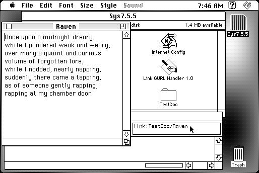

Download
link_gurl_handler_1.0.zip (12K) Link GURL Handler 1.0 repackaged into a zipped hfs disk image and checksum file. The disk image can be mounted with Mini vMac.
link_gurl_handler_1.0.sit (8K) Link GURL Handler 1.0 in the original format.
copyright: Niklas Frykholm
mod date: Sep 22, 1997
license: freeware
from url :
Link GURL Handler
A program such as MacWeb will send URLs it doesn't know about to helper applications specified in Internet Config. “Link GURL Handler” is a helper application that will open local files, folders, and applications.

If you find these downloads useful, please consider helping the Gryphel Project, which hosts them.
Here are the md5 checksums for the downloads, signed with Gryphel Key 5:
--------- GRY SIGNED TEXT --------- b2921a3f813896b5cbd884c513c38262 link_gurl_handler_1.0.zip 972d1cbe3e09378e0286aa5fa560fee2 link_gurl_handler_1.0.sit ------- BEGIN GRY SIGNATURE ------- Gry/4Xa8CFcUzxdN/C+G4qByNY0EmvbT0CI5oG+zhdymsthhQxZqUg6Wms/4Pbg2 nCvX7vsAbbmk5cRGGk8LpwUz4rzMpgwL4L0cZIQp5BJSIeKzpp2vcwWuHSK6igpk 9EUfFnX+lhbYgxn10EZ4UNHNDa6r19gIQyDlNnuytYbh0AImU2e9rgLcxzo0d9z5 -------- END GRY SIGNATURE --------